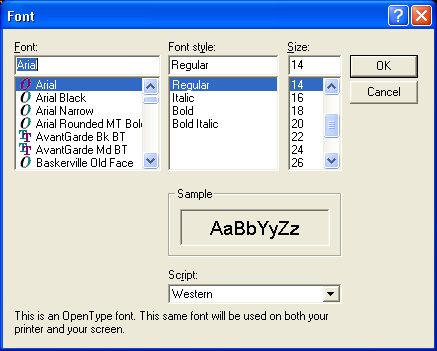

FontRequester()
语法
Result = FontRequester(FontName$, FontSize, Flags [, Color [, Style]])概要
Opens the standard requester to choose a font. The functions SelectedFontColor(), SelectedFontName(), SelectedFontSize() and SelectedFontStyle() can be used after a successful call to get the needed information about the selected font.
参数
FontName$ The default font name to use when the requester is opened. FontSize The default font size to use when the requester is opened. Flags It can be one of the following values: #PB_FontRequester_Effects : Enable the requesters effects, including color chooser (Windows only).Color (optional) Sets the default color when the requester is opened. A valid color value you can get with the function RGB(). Style (optional) Sets the default style when the requester is opened. See SelectedFontStyle() for available styles.
返回值
Nonzero if a font has been choosen, zero if the user canceled the requester.
示例
FontName$ = "Arial" ; set initial font (could also be blank) FontSize = 14 ; set initial size (could also be null) Result = FontRequester(FontName$, FontSize, #PB_FontRequester_Effects) If Result Message$ = "You have selected following font:" + #LF$ Message$ + "Name: " + SelectedFontName() + #LF$ Message$ + "Size: " + Str(SelectedFontSize()) + #LF$ Message$ + "Color: " + Str(SelectedFontColor()) + #LF$ If SelectedFontStyle() & #PB_Font_Bold Message$ + "Bold" + #LF$ EndIf If SelectedFontStyle() & #PB_Font_StrikeOut Message$ + "StrikeOut" + #LF$ EndIf If SelectedFontStyle() & #PB_Font_Underline Message$ + "Underline" + #LF$ EndIf Else Message$ = "The requester was canceled." EndIf MessageRequester("FontRequester", Message$, #PB_MessageRequester_Ok)

参阅
SelectedFontColor(), SelectedFontName(), SelectedFontSize(), SelectedFontStyle()
已支持操作系统
所有